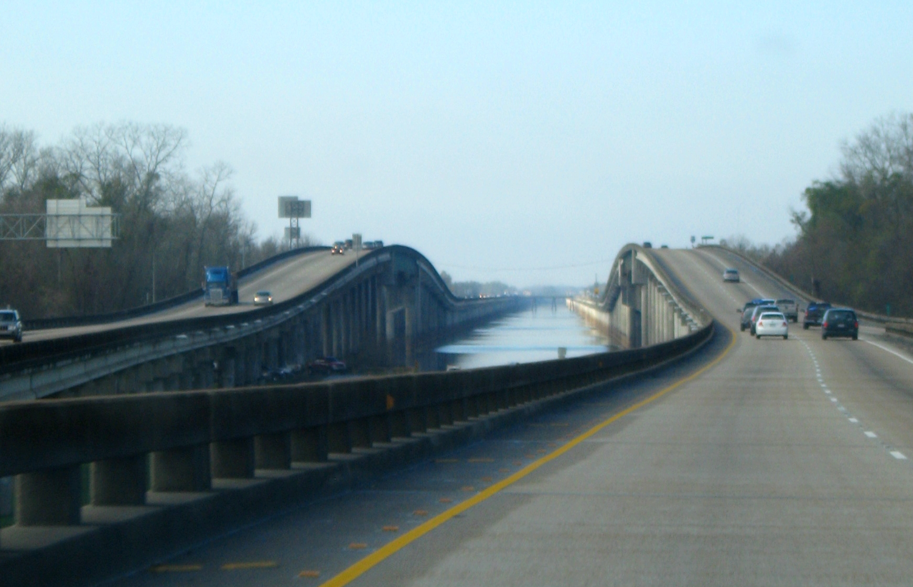
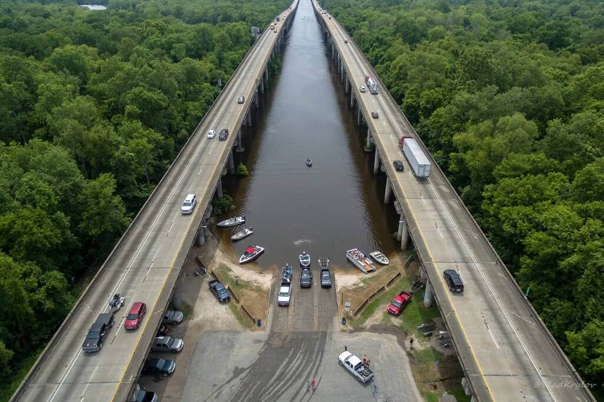
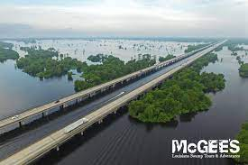

Most Atchafalaya Basin, znany również jako Louisiana Airborne Memorial Bridge, to para równoległych mostów w amerykańskim stanie Luizjana, pomiędzy Baton Rouge i Lafayette, które prowadzą międzystanową nr 10 nad basenem Atchafalaya. O całkowitej długości 96 095 stóp (29 290 m; 18 mil; 29 km) jest trzecim najdłuższym mostem w USA, drugim co do długości w systemie międzystanowym i 14. co do długości na świecie pod względem całkowitej długości. Most został oddany do użytku w 1973 r., budowę rozpoczęto w 1971 r. W momencie ukończenia był to drugi najdłuższy most w Stanach Zjednoczonych, po Lake Pontchartrain Causeway Bridge. Z mostu znajdują się dwa zjazdy: jedno do Whiskey Bay (Louisiana Highway 975) i drugie do Butte La Rose (LA 3177). Chociaż mosty na większości swojej długości przebiegają równolegle, łączą się podczas przekraczania kanału pilotażowego Whiskey Bay i rzeki Atchafalaya. Średnie dzienne natężenie ruchu wynosi (stan na 2015 r.) 30 420 pojazdów. W pobliżu dwóch przepraw przez rzekę często dochodzi do wypadków, ponieważ oba są bardzo wąskie i pozbawione poboczy. Wypadki na moście mogą być problematyczne, ponieważ dorzecze Atchafalaya jest słabo zaludnione. W 1999 roku gubernator Mike Foster obniżył dozwoloną prędkość na moście z 70 do 60 mil na godzinę (115 do 95 km/h). W 2003 roku legislatura Luizjany przyjęła nowe przepisy ruchu drogowego dla mostu. Dozwolona prędkość dla 18-kołowców została obniżona do 55 mil na godzinę (90 km/h), a podczas przekraczania mostu muszą oni pozostać na prawym pasie.   